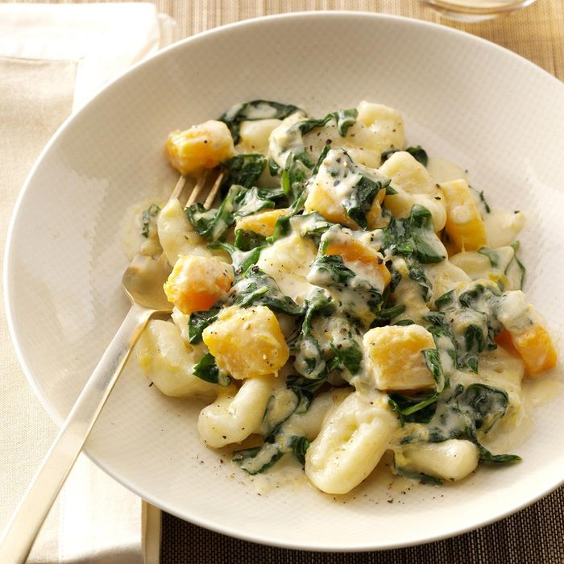

< go back
Ricotta Gnocchi with Spinach & Gorgonzola

Description:
Prepare for a cheesy experience filled with Italian pasta.
Ingredients:
- 3 large potatoes
- 3 cups Ricotta cheese
- 1/4 grated Romano cheese
- 2 tablespoons olive oil
- 1 tablespoon salt
- 6 large eggs
- 4 1/2 cups cake flour
- 4 quarts water
- 1/3 cup thinly sliced fresh basil leaves
- 1/3 cup water
- 2 tablespoons plus 2 teaspoons olive oil
- 2 garlic cloves, peeled and thinly sliced
- 1 1/4 teaspoons salt
- 3/4 teaspoon pepper
- 1 1/3 cups heavy whipping cream
- 2/3 cup crumbled Gorgonzola cheese
- 1 1/2 pounds fresh spinach, coarsely chopped
Steps:
- Scrub and pierce potatoes. Bake at 400° for 50-55 minutes or until tender. Peel potatoes; press through a potato ricer or strainer into a large bowl. Cool slightly.
- Add ricotta and Romano cheeses, oil and salt to potato pulp; beat on low speed until smooth. Beat in eggs, 1 at a time. Add flour; mix well. On a lightly floured surface, knead 10-12 times, forming a soft dough.
- Divide dough into 16 portions. On a floured surface, roll each portion into a 1/2-in.-thick rope; cut into 3/4-in. pieces. Press and roll each piece with a lightly floured fork.
- In a Dutch oven, bring water to a boil. Cook gnocchi in batches until they float, 30-60 seconds. Remove with a slotted spoon and keep warm.
- In a large saucepan, combine the squash, basil, water, oil, garlic, salt and pepper. Bring to a boil. Cover and cook until squash is tender, 4-6 minutes.
- Stir in cream and Gorgonzola. Bring to a boil. Reduce heat; simmer, uncovered, for 2 minutes. Add spinach; cook until spinach is wilted. Serve with gnocchi.